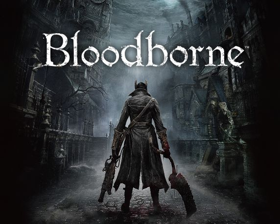

Why Bloodborne is Great

Bloodborne is a 2015 video game created by From Software. Bloodborne is a
notoriously difficult game for its very punishing combat system. What makes Bloodborne
different from it’s cousin Dark Souls, is that Bloodborne has much faster gameplay revolving
around dodging and presents a challenge of managing limited resources during a fight to be successful.
Bloodborne is set in a fictional world where many people have been mutated into a
variety of horrifying creatures and some have simply gone mad. Many elements of Bloodborne
are inspired by gothic horror with a bit of lovecraft mixed in. These elements are combined with
other aspects of the game to make sure the player feels on edge at all times. My particular
favorite detail of level design is the choice to have no background music at all. This lack of
music leaves the player only able to hear their footsteps as they quietly explore unknown parts
of the world. Having no music causes the player to be a lot more tense as they tend to want to
anticipate when an enemy might appear as enemies jumping out in surprise is quite common and often
very dangerous in such a punishing game in terms of damage.
Bloodborne’s ability to manipulate the player’s fear simply through design choices along
with excellent boss fights is what personally makes Bloodborne great.
published
Matthew DeBoer